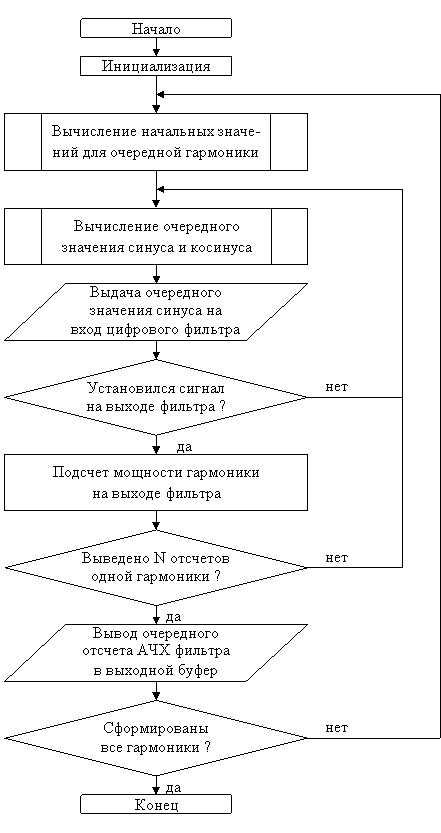

Для измерения АЧХ фильтра может быть использован генератор синусоидальных сигналов, разработанный в лабораторных работах №1 и №2. На вход фильтра в течение заданных интервалов времени последовательно подается синусоидальный сигнал с увеличивающейся частотой.
По истечении времени, необходимого на установку сигнала на выходе фильтра, необходимо измерить мощность сигнала, для чего можно воспользоваться выражением
 |
(4.1) |
где Е – энергия сигнала, y(n) – значение на выходе фильтра, N – интервал усреднения, состоящий из целого числа периодов сигнала.
Для нахождения АЧХ фильтра необходимо найти отношение амплитуды синусоидального сигнала на выходе фильтра к амплитуде на входе фильтра на каждой частоте. При этом если взять единичную амплитуду входного сигнала, амплитуды выходных сигналов будут представлять собой АЧХ фильтра. Измерив мощность сигнала, можно найти амплитуду выходного сигнала из следующего соотношения:
| (4.2) |
где Е – энергия сигнала, А – амплитуда синусоидального сигнала.
Для измерения АЧХ фильтра, запрограммированного в лабораторной работе №3, используются программы генераторов из лабораторных работ №1 и №2. После начала формирования очередной гармоники на вход фильтра необходимо подать определенное число отсчетов синуса (не менее одного периода) для достижения установившегося режима на выходе фильтра.
После достижения установившегося режима необходимо в течение N тактов (целое число периодов) накаливать сумму квадратов амплитуд. При N=256 после завершения суммирования в старшей части аккумулятора получится значение энергии (деление на 256 за счет 8-ми защитных разрядов).
Схема алгоритма программы измерения АЧХ фильтра представлена на рис. 4.1.

Рисунок 4.1 – Схема алгоритма измерения АЧХ фильтра
- Изучить теоретические сведения по теме лабораторной работы (подразд. 4.2).
- Получить у преподавателя задание для выполнения практической части работы.
- Согласно заданию написать, оттранслировать и выполнить программу.
- Продемонстрировать результат трансляции и работы программы преподавателю.
- Оформить и защитить отчет по лабораторной работе.
- Цель работы и исходные данные.
- Описание алгоритма работы программы.
- Листинг программы с комментариями.
- Выводы по работе.